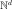
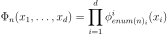
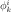
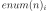
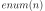
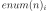
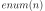
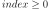

TensorizedUniVariateFunctionFactory¶
-
class
TensorizedUniVariateFunctionFactory(*args)¶ Base class for tensorized multivariate functions.
- Available constructors:
TensorizedUniVariateFunctionFactory(functions)
TensorizedUniVariateFunctionFactory(functions, enumerateFunction)
Parameters: - functions : list of
UniVariateFunctionFamily List of univariate function factories.
- enumerateFunction :
EnumerateFunction Associates to an integer its multi-index image in the  dimension, which is the dimension of the basis. This multi-index represents the collection of degrees of the univariate polynomials.
Notes
TensorizedUniVariateFunctionFactory allows to create multidimensional functions as the tensor product of univariate functions created by their respective factories (i.e.
UniVariateFunctionFamily):
where  is the univariate basis of degree
 associated to the component
associated to the component  and  is the ith component of the multi-index 
and  is the ith component of the multi-index Let’s note that the exact hessian and gradient have been implemented for the product of polynomials.
Examples
>>> import openturns as ot >>> funcColl = [ot.HaarWaveletFactory(), ot.FourierSeriesFactory(), ot.MonomialFunctionFactory()] >>> dim = len(funcColl) >>> enumerateFunction = ot.LinearEnumerateFunction(dim) >>> productBasis = ot.TensorizedUniVariateFunctionFactory(funcColl, enumerateFunction)
Attributes: thisownThe membership flag
Methods
build(index)Build the element of the given index. getClassName()Accessor to the object’s name. getDimension()Get the dimension of the Basis. getId()Accessor to the object’s id. getName()Accessor to the object’s name. getShadowedId()Accessor to the object’s shadowed id. getSize()Get the size of the Basis. getSubBasis(indices)Get a sub-basis of the Basis. getVisibility()Accessor to the object’s visibility state. hasName()Test if the object is named. hasVisibleName()Test if the object has a distinguishable name. isFinite()Tell whether the basis is finite. isOrthogonal()Tell whether the basis is orthogonal. setName(name)Accessor to the object’s name. setShadowedId(id)Accessor to the object’s shadowed id. setVisibility(visible)Accessor to the object’s visibility state. add getEnumerateFunction getFunctionFamilyCollection setEnumerateFunction setFunctionFamilyCollection -
__init__(*args)¶ Initialize self. See help(type(self)) for accurate signature.
-
build(index)¶ Build the element of the given index.
Parameters: - index : int, 
Index of an element of the Basis.
Returns: - function :
Function The function at the index index of the Basis.
Examples
>>> import openturns as ot >>> dimension = 3 >>> input = ['x0', 'x1', 'x2'] >>> functions = [] >>> for i in range(dimension): ... functions.append(ot.SymbolicFunction(input, [input[i]])) >>> basis = ot.Basis(functions) >>> print(basis.build(0).getEvaluation()) [x0,x1,x2]->[x0]
-
getClassName()¶ Accessor to the object’s name.
Returns: - class_name : str
The object class name (object.__class__.__name__).
-
getDimension()¶ Get the dimension of the Basis.
Returns: - dimension : int
Dimension of the Basis.
-
getId()¶ Accessor to the object’s id.
Returns: - id : int
Internal unique identifier.
-
getName()¶ Accessor to the object’s name.
Returns: - name : str
The name of the object.
-
getShadowedId()¶ Accessor to the object’s shadowed id.
Returns: - id : int
Internal unique identifier.
-
getSize()¶ Get the size of the Basis.
Returns: - size : int
Size of the Basis.
-
getSubBasis(indices)¶ Get a sub-basis of the Basis.
Parameters: - indices : list of int
Indices of the terms of the Basis put in the sub-basis.
Returns: - subBasis : list of
Function Functions defining a sub-basis.
Examples
>>> import openturns as ot >>> dimension = 3 >>> input = ['x0', 'x1', 'x2'] >>> functions = [] >>> for i in range(dimension): ... functions.append(ot.SymbolicFunction(input, [input[i]])) >>> basis = ot.Basis(functions) >>> subbasis = basis.getSubBasis([1]) >>> print(subbasis[0].getEvaluation()) [x0,x1,x2]->[x1]
-
getVisibility()¶ Accessor to the object’s visibility state.
Returns: - visible : bool
Visibility flag.
-
hasName()¶ Test if the object is named.
Returns: - hasName : bool
True if the name is not empty.
-
hasVisibleName()¶ Test if the object has a distinguishable name.
Returns: - hasVisibleName : bool
True if the name is not empty and not the default one.
-
isFinite()¶ Tell whether the basis is finite.
Returns: - isFinite : bool
True if the basis is finite.
-
isOrthogonal()¶ Tell whether the basis is orthogonal.
Returns: - isOrthogonal : bool
True if the basis is orthogonal.
-
setName(name)¶ Accessor to the object’s name.
Parameters: - name : str
The name of the object.
-
setShadowedId(id)¶ Accessor to the object’s shadowed id.
Parameters: - id : int
Internal unique identifier.
-
setVisibility(visible)¶ Accessor to the object’s visibility state.
Parameters: - visible : bool
Visibility flag.
-
thisown¶ The membership flag